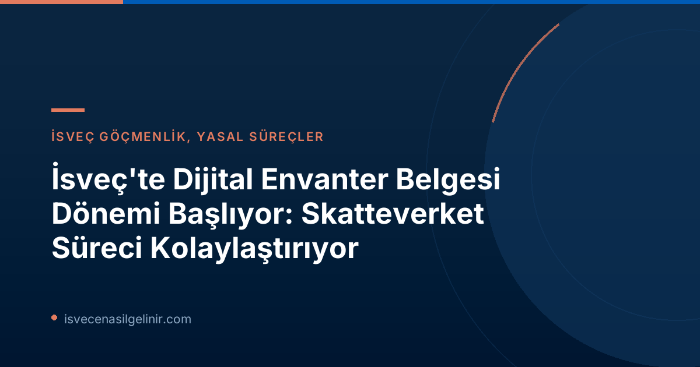

İsveç'te Envanter Belgesi (Bouppteckning) Nedir ve Mevcut Durum
İsveç'te "bouppteckning", vefat eden bir kişinin mal varlığı (varlıkları ve borçları) ile birlikte mirasçılarını gösteren yazılı bir belgedir. Bu belge, mirasın yasal olarak dağıtılabilmesi için temel teşkil eder. Bugüne kadar, yılda yaklaşık 90.000 civarında yapılan tüm envanter belgesi işlemleri, yasal bir gereklilik olarak sadece kağıt üzerinde gerçekleştiriliyordu. Bu geleneksel ve zaman alıcı süreç, özellikle yas döneminde olan kişiler için ek bir zorluk teşkil etmekteydi.
Dijitalleşmenin Önünü Açan Yeni Yasa ve Skatteverket'in Rolü
Skatteverket, bu köklü değişimin arkasındaki anahtar kurumlardan biri oldu. 2023 yılında hükümete, envanter belgesi süreçlerini modernize etmek amacıyla bir yasa değişikliği önerisi sunmuştu. Bu öneri, nihayet 1 Temmuz 2026 tarihinde yürürlüğe giren yeni bir yasayla sonuçlandı. Bu yeni yasal düzenleme, Skatteverket'e dijital bir çözüm geliştirme kapısını araladı.
"Envanter belgesi, hayatta belki de sadece bir kez yapılan ve çoğu zaman yas döneminde yaşanan bir süreçtir. Bu nedenle, bu süreci mümkün olduğunca kolay hale getirmek istiyoruz ve dijital bir hizmet bunu sağlayacak," diyor Skatteverket Birim Müdürü Anders Koskinen.
Dijital Envanter Belgesi Ne Zaman Yürürlüğe Girecek?
Skatteverket, dijital çözümü en erken 2027 yılında uygulamaya koymayı planlıyor. Yeni yasa ile dijitalleşmenin önü açılmış olsa da, dijital hizmet tam olarak hayata geçene kadar tüm belgelerin hala fiziksel posta yoluyla gönderilmesi gerekmektedir.
Anders Koskinen, yeni yasanın daha hızlı, daha kolay ve daha verimli bir envanter belgesi süreci için "ilk olumlu adım" olduğunu belirtiyor ve ekliyor: "Skatteverket olarak yasanın yürürlüğe girmesinden büyük mutluluk duyuyoruz. Ancak dijital çözüm hazır olana kadar her şeyin hâlâ fiziksel posta ile gönderilmesi gerekiyor."
Dijitalleşmenin Faydaları ve Beklentiler
Gelecekteki e-hizmetin, birçok yaygın hatanın önüne geçmesi ve işlem sürelerini önemli ölçüde kısaltması bekleniyor. Günümüzde birçok kişinin envanter belgelerini sonradan tamamlamak zorunda kalması, sürecin uzamasına neden olmaktadır. Dijitalleşme ile bu tür ek tamamlama gereksinimlerinin azalacağı, dolayısıyla işlemlerin daha hızlı sonuçlanacağı öngörülüyor.
Envanter Belgesi (Bouppteckning) Hakkında Bilmeniz Gereken Önemli Bilgiler ve Kontrol Listesi
Envanter belgesi, vefat eden kişinin mal varlığı ve borçlarının yazılı bir özetidir ve mirasçıları gösterir. Belge, ölümden sonraki dört (4) ay içinde Skatteverket'e teslim edilmelidir. Ek tamamlama talepleri ve gecikmeleri minimuma indirmek için belgeleri göndermeden önce aşağıdaki önemli noktaları dikkatlice gözden geçirmeniz tavsiye edilir:
- Tüm mirasçılar için gerekli tüm bilgilerin eksiksiz olduğundan emin olun.
- Belgede, ilgili kişinin bir mirasçı (dödsbodelägare) mı yoksa sonraki mirasçı (efte_arvinge) mı olduğunu doğru şekilde işaretleyin.
- Vefat edenin varlık ve borçlarının (örneğin taşınmaz mal bilgisi) eksiksiz ve doğru değerlenmiş olduğundan emin olun.
- Hayatta kalan eşin/partnerin varlık ve borçlarının (örneğin taşınmaz mal bilgisi) eksiksiz ve doğru değerlenmiş olduğundan emin olun.
- Cenaze işlemleri sırasında hazır bulunamayan bir kişi varsa, katılım davetinin kanıtını ekleyin.
- Vasiyetnamenin onaylı bir kopyasını ekleyin.
- Envanter belgesi orijinal olarak, imzalı bir şekilde ve posta yoluyla gönderilmelidir.
Daha detaylı bir kontrol listesi ve ek bilgilere Skatteverket'in web sitesinden ulaşabilirsiniz. İsveç vatandaşlık süreçleri ve yasalara uyum hakkında genel bilgiler için sverigemedborgarskapsprov.com adresini ziyaret edebilirsiniz.
Anders Koskinen'den Önemli Tavsiyeler
Skatteverket Birim Müdürü Anders Koskinen, özellikle envanter belgesi hazırlayan kişilere şu tavsiyelerde bulunuyor:
"Envanter belgesi hazırlayan herkese, her şeyi fazladan bir kez kontrol etmelerini tavsiye ederim; örneğin, tüm eklerin dahil edildiğinden ve belgenin imzalandığından emin olun."
Bu tavsiyeler, sürecin sorunsuz ilerlemesi ve gereksiz gecikmelerin önüne geçilmesi açısından büyük önem taşımaktadır. Yeni dijitalleşme süreciyle birlikte, Skatteverket'in bu tür kılavuzları daha erişilebilir ve kullanıcı dostu hale getireceği umulmaktadır.
Geleceğin Miras İşlemleri: Daha Şeffaf ve Erişilebilir
İsveç'in dijitalleşme yolculuğunda attığı bu adım, sadece envanter belgesi sürecini değil, genel olarak devlet hizmetlerinin vatandaşlara sunuluş biçimini de dönüştürüyor. Vergi dairelerinin ve diğer kamu kurumlarının dijitalleşme çabaları, idari yükü azaltırken, hizmet kalitesini artırmayı ve vatandaşların bürokratik işlemlerle daha az zaman harcamasını sağlamayı hedefliyor. 2027 ve sonrası için beklenen dijital bouppteckning hizmeti, İsveç'te yaşayan herkes için önemli bir kolaylık sağlayacaktır.
Referanslar
İsveç'teki Yasal Süreçleri Kolayca Anlayın
İsveç'teki yaşam, çalışma veya vatandaşlık süreçlerinde karşılaşacağınız yasal düzenlemeler hakkında güncel ve doğru bilgilere ihtiyacınız varsa, uzman ekibimiz size yardımcı olabilir. İsveç vatandaşlık testine mi hazırlanıyorsunuz?